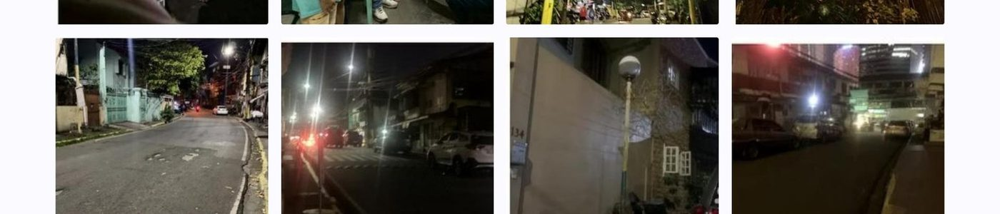

Part II · Infrastructure, Risk Mapping & Public Safety
Danger Zones
Accident Hotspot Mapping and Infrastructure Risk Assessment in Barangka Ilaya, Mandaluyong City
0–10 lux
night illumination in the Bataan area — including complete dark zones, far below the 20-lux adequacy reference
At a Glance
Study site
Barangay Barangka Ilaya
Coverage
Roads in the Barangka corridor
Lowest lux
Bataan 0–10 · San Roque ~8
Data sources
Lux + accident logs
Research Summary
This study mapped accident-prone sections of Barangay Barangka Ilaya by pairing night-time lighting measurements with field observation and a review of non-identifiable barangay accident logs. The team documented streetlight functionality, signage visibility, and road-geometry hazards along accessible segments of the Barangka corridor. Results showed that the most severe illumination deficiencies were concentrated in San Roque and the Bataan area, where dim or obstructed lighting overlapped with narrow pedestrian conditions and recurring risk indicators.
Objectives
- Locate areas that lack visible signages or functioning streetlights.
- Review the frequency and location of recorded road accidents in covered areas.
- Test whether poor lighting and incomplete signage correspond to hazard clustering.
- Prioritize infrastructure gaps that require the earliest local intervention.
Context & Method
Road visibility is a basic condition of urban safety, yet in dense mixed-traffic corridors even small infrastructure gaps can become collision multipliers. In Barangka Ilaya, residents and commuters navigate dim lights, narrow pathways, blind curves, and incomplete warning signages, especially after dark. The study addressed a local evidence gap by linking measurable illumination levels to observed road conditions and barangay-level accident entries, allowing risk to be mapped not as an anecdotal complaint but as an infrastructure pattern.
- A descriptive-correlational design was combined with spatial mapping of accessible road segments.
- Night-time illumination was measured at roughly 20–30 meter intervals using a mobile lux-meter application.
- Three smartphones were cross-checked; only Samsung readings were retained due to stable repeated measurements.
- Non-identifiable barangay accident entries were extracted by date, time period, location, and accident type.

24S. Cruz (lux)
22Pinatubo (lux)
26Apo (lux)
8San Roque (lux)
5Bataan (lux)
Key Findings
- S. Cruz, Pinatubo, and Apo Streets recorded moderate visibility at roughly 20–28 lux.
- San Roque dropped to approximately 8 lux, indicating reduced driver and pedestrian visibility.
- The Bataan area reached 0–10 lux, including complete dark zones that demand immediate action.
- Recorded accident locations overlapped with high-traffic corridors and noted infrastructure gaps such as poor signage and narrow pathways.
Implications & Recommended Actions
- Repair or replace non-functioning streetlights in the lowest-lux segments first.
- Clear vegetation and wire obstructions that block existing light coverage.
- Install or refresh warning signages near blind curves and narrow road sections.
- Maintain a GPS-based barangay hazard log for regular monitoring and mapping updates.
20–28Lux · brighter streets
~8Lux · San Roque
0–10Lux · Bataan
20Lux adequacy ref.
“The clustering of dark zones and logged accident locations shows that visibility and warning cues are not minor details — they are frontline public-safety infrastructure.”
Research Team — Grade 12
Research Adviser
Mr. Franklin D. Garvida
Student Researchers
Zayden Panganiban, Alvin Aguinaldo, Rence Hernandez, Lindsay Marie Landerito, Althea Capilador, Hillary Enciso, Danmark Tambule, Curt Jhonvien De Leon, Dave Emplamado
Keywords accident hotspot mapping; road safety; street lighting; road signage; lux measurement; Barangka Ilaya